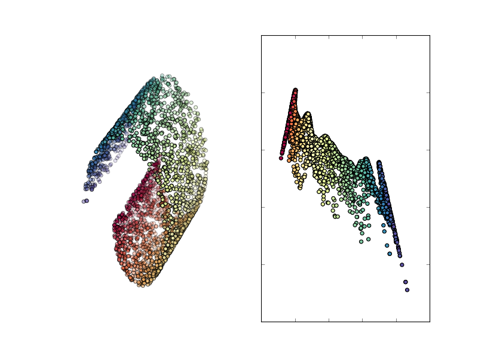

Tapkee
An efficient dimension reduction toolbox
Diffusion map
The diffusion map algorithm performs the following steps to embed feature vectors \( x_1, \dots, x_N \):
- Compute \( N \times N \) gaussian kernel matrix \( K \) such that
\[ K_{i,j} = \exp\left\{ - \frac{d^2(x_i,x_j)}{\omega} \right\},\]
where \( d : X \times X \to \mathbb{R} \) is a distance function and \( \omega > 0 \) is a width of the kernel.
- Transform the matrix \( K \) using the following equations
\[ K_{i,j} \leftarrow \frac{K_{i,j}}{(p_i p_j)^q},\]
where \( p_i = \sum_{j=1}^{N} K_{j,i}\). Then, recompute \( p_i = \sum_{j=1}^{N} K_{j,i} \) again and do
\[ K_{i,j} \leftarrow \frac{K_{i,j}}{\sqrt{p_i p_j}}.\]
- Construct embedding with \( \dim = t \) from the solution of the following partial eigenproblem
\[ K^{T} K f = \lambda f \]
for \(t \) largest eigenvalues. Form the embedding matrix such that \(i\)-th coordinate (\( i=1,\dots,N \)) of \(j\)-th largest
eigenvector (\( j=1,\dots,t\) ) corresponds to \(j\)-th coordinate of projected \(i\)-th vector.
Result of applying diffusion map to swissroll data

References
-
Coifman, R., & Lafon, S. (2006). Diffusion maps.